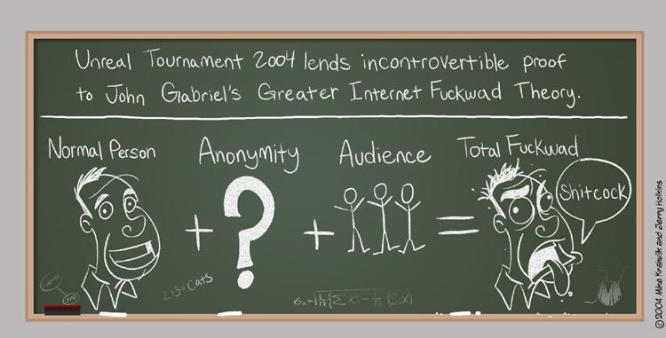
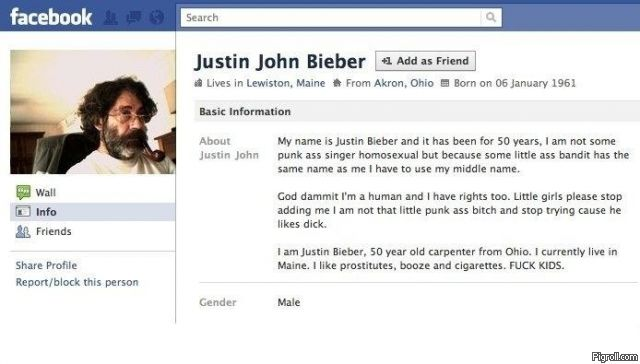

#nymwars and the public sphere
SIGINT 2012
"A name is a sorta-unique identifier
for entities and objects aimed at being
pronouncable and memorable
by humans."

Quote Google Support:
"Google Profiles is a product that works best in the identified state. This way you can be certain you’re connecting with the right person, and others will have confidence knowing that there is someone real behind the profile they’re checking out."
=> false positives

| Table of Contents | t |
|---|---|
| Exposé | ESC |
| Full screen slides | e |
| Presenter View | p |
| Source Files | s |
| Slide Numbers | n |
| Toggle screen blanking | b |
| Show/hide slide context | c |
| Notes | 2 |
| Help | h |